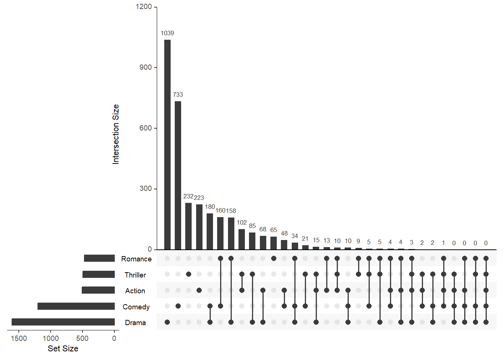
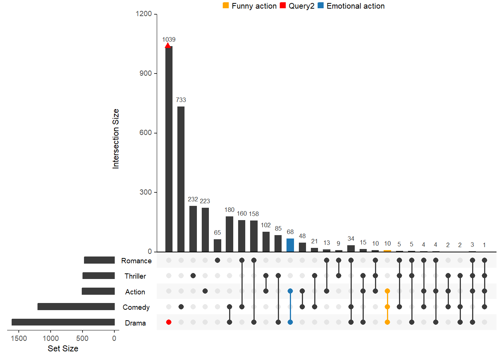

movies <- read.csv(system.file("extdata", "movies.csv", package = "UpSetR"),
header = T, sep = ";")Создание графиков в пакете UpSetR
R
UpSet
visualization
Рассмотрим пакет UpSetR, разберем примеры построения качественных и красивых графиков
Графики UpSet в пакете UpSetR
Создание графиков UpSet в пакете UpSetR процесс достаточно простой и интуитивно понятный, пакет поможет создавать качественные и красивые визуализации для полного и глубокого анализа данных.
Построение простого графика
Загрузим набор данных предоставляемый этим пакетом. Для построения графика будем использовать функцию upset, подробнее об этой функции в ?upset
Выберем 6 наибольших наборов.
upset(movies, nsets = 6, number.angles = 0, point.size = 3.5, line.size = 2,
mainbar.y.label = "Genre Intersections", sets.x.label = "Movies Per Genre",
text.scale = c(1.3, 1.3, 1, 1, 2, 0.75))Выбрать конкретные наборы и задать параметры группировки
mb.ratio = c(0.75, 0.25) - через этот параметр задаем соотношение между столбчатой диаграммой и диаграммой пересечений. Сумма коэффициентов должна равняться единице.
```{r}
upset(movies, sets = c("Action", "Adventure", "Comedy", "Drama", "Mystery",
"Thriller", "Romance", "War", "Western"), mb.ratio = c(0.75, 0.25), order.by = "degree")
upset(movies, sets = c("Action", "Adventure", "Comedy", "Drama", "Mystery",
"Thriller", "Romance", "War", "Western"), mb.ratio = c(0.55, 0.45), order.by = c("degree", "freq"))
```Задать порядок наборов при сортировке
keep.order - при значении TRUE упорядочивает наборы в том порядке в котором они записаны в sets при значении FALSE по их размеру
Группировка по наборам
nintersects - количество пересечений выведенных на график, по умолчанию выводятся все пересечения group.by - способ группировки по наборам или по количеству пересечений наборов cutoff - Количество пересечений из каждого набора (для отсечения) при агрегировании по наборам
upset(movies, nintersects = 70, group.by = "sets", cutoff = 7)Отображение пустых пересечений
empty.intersections = “on” - свойство позволяет дополнительно отображать пустые пересечения
upset(movies, empty.intersections = "on", order.by = "freq")
Атрибуты графиков
С помощью атрибутов можно выводить дополнительные диаграммы на график.
Параметр attribute.plots содержит три поля: gridrows, plots, and ncols
-
gridrowsуказывает на сколько нужно увеличить высоту окна графика чтобы добавить место под диаграммы атрибутов. График UpSetR отрисовывается на сетка размером 100 х 100. Например если установить парамертgridrows = 50, то размер новой сетки окна будет 150 х 100. -
plotsтакже содержит список параметров, в нем задаютсяplot,x,yиqueries. -
plotфункция возвращающая ggplot -
xзадает параметр к оси X -
yзадает параметр к оси Y -
queries: указывает необходимо ли применять к графиком атрибутов результаты параметраqueriesфункцииupset. Если значение True, то к графику будет применен параметрqueries, если False, то нет. Сам же параметрqueriesимеет атрибутqueryкоторый определяет какая функция будет применена к графику, например intersects или самописная функция. -
ncolsуказывает, как должны быть расположены графики в пространстве строк сетки. Если введены два графика атрибутов и значение ncols равно 1, то графики будут отображаться один над другим. В качестве альтернативы, если введены два графика атрибутов и значение ncols равно 2, графики атрибутов будут отображаться рядом.
Встроенная гистограмма атрибутов
upset(movies, main.bar.color = "black", queries = list(list(query = intersects,
params = list("Drama"), active = T)),
attribute.plots = list(gridrows = 50,
plots = list(
list(plot = histogram, x = "ReleaseDate", queries = F),
list(plot = histogram, x = "AvgRating", queries = T)),
ncols = 2)
)Встроенная точечная диаграмма
В этом коде задаем форматирование для пересечений нужным цветом. Потом в дополнительных диаграммах атрибутов определяем использовать это форматирование или нет.
upset(movies, main.bar.color = "black",
queries = list(
list(query = intersects, params = list("Drama"), color = "red", active = F),
list(query = intersects, params = list("Action", "Drama"), active = T),
list(query = intersects, params = list("Drama", "Comedy", "Action"), color = "orange", active = T)
),
attribute.plots = list(gridrows = 45,
plots = list(list(plot = scatter_plot, x = "ReleaseDate", y = "AvgRating", queries = T),
list(plot = scatter_plot, x = "AvgRating", y = "Watches", queries = F)
),
ncols = 2), query.legend = "bottom")Создание пользовательских графиков
Здесь вместо одной из точечных диаграмм, добавляем диаграмму постороенную по пользовательской функцие.
myplot <- function(mydata, x, y) {
plot <- (ggplot(data = mydata, aes_string(x = x, y = y, colour = "color")) +
geom_point() + scale_color_identity() + theme(plot.margin = unit(c(0, 0, 0, 0), "cm")))
}
another.plot <- function(data, x, y) {
data$decades <- round_any(as.integer(unlist(data[y])), 10, ceiling)
data <- data[which(data$decades >= 1970), ]
myplot <- (ggplot(data, aes_string(x = x)) + geom_density(aes(fill = factor(decades)),
alpha = 0.4) + theme(plot.margin = unit(c(0, 0, 0, 0), "cm"), legend.key.size = unit(0.4,
"cm")))
}
upset(movies, main.bar.color = "black",
queries = list(list(query = intersects, params = list("Drama"), color = "red", active = F),
list(query = intersects, params = list("Action", "Drama"), active = T),
list(query = intersects, params = list("Drama", "Comedy", "Action"), color = "orange", active = T)),
attribute.plots = list(gridrows = 45,
plots = list(
list(plot = myplot, x = "ReleaseDate", y = "AvgRating", queries = T),
list(plot = another.plot, x = "AvgRating", y = "ReleaseDate", queries = F)),
ncols = 2))Объединение встроенного точечного графика и графика гистограммы с пользовательским графиком myplot, определенным в приведенном выше примере.
upset(movies, main.bar.color = "black", mb.ratio = c(0.5, 0.5),
queries = list(list(query = intersects, params = list("Drama"), color = "red", active = F),
list(query = intersects, params = list("Action", "Drama"), active = T),
list(query = intersects, params = list("Drama", "Comedy", "Action"), color = "orange", active = T)),
attribute.plots = list(gridrows = 50,
plots = list(
list(plot = histogram,x = "ReleaseDate", queries = F),
list(plot = scatter_plot, x = "ReleaseDate", y = "AvgRating", queries = T),
list(plot = myplot, x = "AvgRating", y = "Watches", queries = F)),
ncols = 3))Встроенная диаграмма boxplot
boxplot, показывает распределение атрибута по всем пересечениям. Может отображать одновременно не более двух сводок графиков. Параметр boxplot.summary принимает вектор из одного или двух имен атрибутов.
upset(movies, boxplot.summary = c("AvgRating", "ReleaseDate"))
Запросы к данным
Разберем параметр query, он часто использовался на предыдущих диаграммах, пора его подробно описать.
-
queryуказывает, какой запрос будет выполняться -
paramsэто список параметров, с которыми будет работать запрос -
colorэто цвет, который будет представлять запрос на графике. Если цвет не указан, будет выбран цвет из палитры цветов по умолчанию. -
activeопределяет, как запрос будет представлен на графике. Если значение active равно TRUE, строка размера пересечения будет перекрыта строкой, представляющей запрос. Если значение active равно FALSE, на панели размера пересечения будет размещена точка дрожания.
В этом примере показано, как использовать встроенный запрос пересечений intersects для поиска или отображения элементов в определенных пересечениях. В этом примере цвет, выбранный для активного запроса, выбран из цветовой палитры по умолчанию.
upset(movies,
queries = list(list(query = intersects, params = list("Drama","Comedy", "Action"), color = "orange", active = T),
list(query = intersects, params = list("Drama"), color = "red", active = F),
list(query = intersects, params = list("Action", "Drama"), active = T)))Встроенные элементы
Если необходимо визуализировать как конкретные значения атрибутов распределяются между пересечениями, то тогда можно использовать запрос элемента elements.
upset(movies,
queries = list(list(query = elements, params = list("AvgRating", 3.5, 4.1), color = "blue", active = T),
list(query = elements, params = list("ReleaseDate", 1980, 1990, 2000), color = "red", active = F)))Использование параметра выражения для запросов к пересечениям подмножеств и элементам
В этом примере показано, как использовать параметр expression для фильтрации подмножества результатов запросов элементов и пересечений.
upset(movies,
queries = list(
list(query = intersects, params = list("Action", "Drama"), active = T),
list(query = elements, params = list("ReleaseDate", 1980, 1990, 2000), color = "red", active = F)
),
expression = "AvgRating > 3 & Watches > 100")Создание пользовательских запросов к элементам и атрибутам набора
Myfunc <- function(row, release, rating) {
data <- (row["ReleaseDate"] %in% release) & (row["AvgRating"] > rating)
}
upset(movies,
queries = list(list(query = Myfunc, params = list(c(1970, 1980, 1990, 1999, 2000), 2.5),
color = "blue", active = T))
)Добавление легенды
Чтобы добавить условные обозначения для примененных запросов, можно использовать параметр query.legend. Параметр query.legend задает положение, в котором должна отображаться легенда, либо сверху, либо снизу. Чтобы применить определенное имя к каждому запросу, параметр query.name может использоваться при определении запроса в параметре запросов. Если query.name не задан, то будет использоваться общее название. В приведенном ниже примере показано, как это сделать.
upset(movies,
query.legend = "top",
queries = list(
list(query = intersects, params = list("Drama", "Comedy", "Action"), color = "orange", active = T,
query.name = "Funny action"),
list(query = intersects, params = list("Drama"), color = "red", active = F),
list(query = intersects, params = list("Action", "Drama"), active = T,
query.name = "Emotional action"))
)
Объединим примененные выше методы
upset(movies,
query.legend = "bottom",
queries = list(
list(query = Myfunc, params = list(c(1970, 1980, 1990, 1999, 2000), 2.5), color = "orange", active = T),
list(query = intersects, params = list("Action", "Drama"), active = F),
list(query = elements, params = list("ReleaseDate", 1980, 1990, 2000), color = "red", active = F,
query.name = "Decades")),
expression = "AvgRating > 3 & Watches > 100")Добавление метаданных набора на график
Добавление метаданных задается параметром: set.metadata
Разберем атрибуты этого параметра:
data: принимает фрейм данных, где первый столбец - это имена наборов, а следующие столбцы - атрибуты наборов.plots: это список, который принимает список параметров, используемых для создания графиков. Эти параметры включают столбец, тип, назначение и цвета.column: столбец используемого набора данныхЮ по которому будет строиться графикtype: это то, какой тип графика следует использовать для отображения данных из указанного столбца. Если данные в столбце числовые, то тип графика может быть либо гистограммой (“hist”), либо тепловой картой (“heat”). Если данные в столбце являются логическими, то типом графика может быть тепловая карта “bool”. Если данные в столбце являются категориальными (символьными), то тип графика может быть либо тепловой картой (“тепло”), либо текстом (“текст”). Кроме того, если данные в столбце порядковые (коэффициентные), то тип графика может быть либо тепловой картой, либо текстом. Существует также тип под названием “matrix_rows”, который позволяет нам использовать применение цветов к фону матрицы с использованием категориальных данных. Этот тип полезен для определения характеристик наборов с использованием матрицы.assign: это количество столбцов, которые должны быть назначены конкретному графику. Например, если вы строите 2 набора графиков метаданных, то вы можете выбрать один график, который будет занимать 20 столбцов, а другой - 10 столбцов. Поскольку график смещения обычно наносится на сетку размером 100 на 100, сетка теперь будет иметь размер 100 на 130, где примерно 1/4 участка отводится графикам метаданных.-
colors: используется для указания цветов, используемых в графиках метаданных. Если тип графика - линейчатый график, то параметр принимает только один цвет для всего графика. Если тип графика “heat” или “bool”, то может быть предоставлен вектор цветов, в котором для каждой уникальной категории (символа) есть один цвет. Однако, если тип данных порядковый (фактор), ввод цветов отсутствует, и тепловая карта работает с цветовым градиентом, а не применяет разные цвета к каждому уровню. Наконец, если тип графика - “текст”, то может быть предоставлен вектор цветов, где для каждой уникальной строки есть один цвет. Если цвета не указаны, вам будет предоставлена цветовая палитра.В этом примере в качестве метаданных набора будут использоваться средние рейтинги фильмов Rotten Tomatoes для каждого набора. Это может помочь нам сделать больше выводов из визуализации, зная, как профессиональные рецензенты обычно оценивают фильмы в этих категориях.
sets <- names(movies[3:19])
avgRottenTomatoesScore <- round(runif(17, min = 0, max = 90))
metadata <- as.data.frame(cbind(sets, avgRottenTomatoesScore))
names(metadata) <- c("sets", "avgRottenTomatoesScore")
# При создании гистограммы с использованием информации метаданных набора важно убедиться, что указанный столбец является числовым.
# is.numeric(metadata$avgRottenTomatoesScore)
# Столбец не является числовым! На самом деле это фактор, поэтому мы должны преобразовать его в символы, а затем в целые числа.
metadata$avgRottenTomatoesScore <- as.numeric(as.character(metadata$avgRottenTomatoesScore))
upset(movies,
set.metadata = list(data = metadata, plots = list(
list(type = "hist", column = "avgRottenTomatoesScore", assign = 20)))
)Добавление тепловой карты
В этом примере мы составим наши собственные данные о том, в каких крупных городах эти жанры были наиболее популярны. Поскольку это категориальный, а не порядковый номер, мы должны не забыть изменить столбец на символы (это снова фактор). Чтобы убедиться, что мы назначаем определенные цвета каждой категории, вы можете указать название каждой категории в цветовом векторе, как показано ниже. Если вам все равно, какой цвет присвоен каждой категории, то вам не нужно указывать названия категорий в цветовом векторе. R просто применит цвета к каждой категории в том порядке, в котором они встречаются. Кроме того, если вы ничего не укажете для параметра colors, вам будет предоставлена цветовая палитра по умолчанию.
Cities <- sample(c("Boston", "NYC", "LA"), 17, replace = T)
metadata <- cbind(metadata, Cities)
metadata$Cities <- as.character(metadata$Cities)
# metadata[which(metadata$sets %in% c("Drama", "Comedy", "Action", "Thriller", "Romance")), ]
upset(movies,
set.metadata = list(data = metadata, plots = list(
list(type = "heat", column = "Cities", assign = 10,
colors = c(Boston = "green", NYC = "navy", LA = "purple"))))
)Теперь давайте также использовать наши числовые значения критики!
Логическая тепловая карта
Теперь предположим, что у нас есть метаданные, которые сообщают нам, хорошо ли эти жанры приняты за рубежом. Это может быть использовано в качестве категориального столбца, где есть только две категории, но для этого примера мы предположим, что ваши данные закодированы в 1 и 0. Важно иметь в виду, что если вы запустите “heat” с 0 и 1 вместо “bool”, двоичные данные будут обрабатываться как числовые значения, а цветовой градиент будет использоваться для отображения относительных различий.
accepted <- round(runif(17, min = 0, max = 1))
metadata <- cbind(metadata, accepted)
# metadata[which(metadata$sets %in% c("Drama", "Comedy", "Action", "Thriller", "Romance")), ]
upset(movies,
set.metadata = list(data = metadata, plots = list(
list(type = "bool", column = "accepted", assign = 5, colors = c("#FF3333", "#006400"))))
)Давайте посмотрим, что произойдет, когда мы выберем “heat” вместо “bool” для нашего столбца двоичных данных.
upset(movies,
set.metadata = list(data = metadata, plots = list(
list(type = "heat", column = "accepted", assign = 5, colors = c("red", "green"))))
)Допустим, мы предпочитаем показывать текст вместо тепловой карты для городов, в которых эти жанры были наиболее популярны.
Применение метаданных к матрице
В некоторых случаях мы можем просто захотеть включить метаданные категориального набора непосредственно в график расслоения, чтобы легко идентифицировать характеристики наборов с помощью матрицы. Для этого нам нужно указать тип как matrix_rows, какой столбец мы используем для категоризации наборов, и цвета, которые будут применяться к каждой категории. Существует также возможность изменить непрозрачность фона матрицы с помощью альфа-кода. Чтобы изменить непрозрачность фона матрицы без применения заданных метаданных, см. параметр shade.alpha в документации к функции disapport().
upset(movies,
set.metadata = list(data = metadata, plots = list(
list(type = "hist", column = "avgRottenTomatoesScore", assign = 20),
list(type = "matrix_rows", column = "Cities",
colors = c(Boston = "green", NYC = "navy", LA = "purple"),
alpha = 0.5)))
)Объединим методы рассмотренные выше на одном графике
upset(movies,
set.metadata = list(data = metadata, plots = list(
list(type = "hist", column = "avgRottenTomatoesScore", assign = 20),
list(type = "bool", column = "accepted", assign = 5, colors = c("#FF3333", "#006400")),
list(type = "text", column = "Cities", assign = 5,
colors = c(Boston = "green", NYC = "navy", LA = "purple"))))
)А теперь соединим методы добавления метаданных, атрибутов и запросов
upset(movies,
set.metadata = list(data = metadata, plots = list(
list(type = "hist", column = "avgRottenTomatoesScore", assign = 20),
list(type = "bool", column = "accepted", assign = 5, colors = c("#FF3333", "#006400")),
list(type = "text", column = "Cities", assign = 5, colors = c(Boston = "green", NYC = "navy", LA = "purple")),
list(type = "matrix_rows", column = "Cities", colors = c(Boston = "green", NYC = "navy", LA = "purple"),
alpha = 0.5))),
queries = list(list(query = intersects, params = list("Drama"), color = "red", active = F),
list(query = intersects, params = list("Action", "Drama"), active = T),
list(query = intersects, params = list("Drama", "Comedy", "Action"),
color = "orange", active = T)),
attribute.plots = list(gridrows = 45, plots = list(
list(plot = scatter_plot, x = "ReleaseDate", y = "AvgRating", queries = T),
list(plot = scatter_plot, x = "AvgRating", y = "Watches", queries = F)), ncols = 2),
query.legend = "bottom")Citation
BibTeX citation:
@online{practicesit2022,
author = {Best Practices IT},
title = {Создание Графиков в Пакете {UpSetR}},
date = {2022-11-24},
langid = {en}
}
For attribution, please cite this work as:
Best Practices IT. 2022. “Создание Графиков в Пакете
UpSetR.” November 24, 2022.